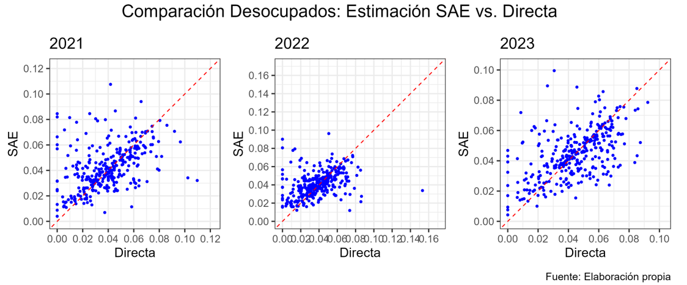
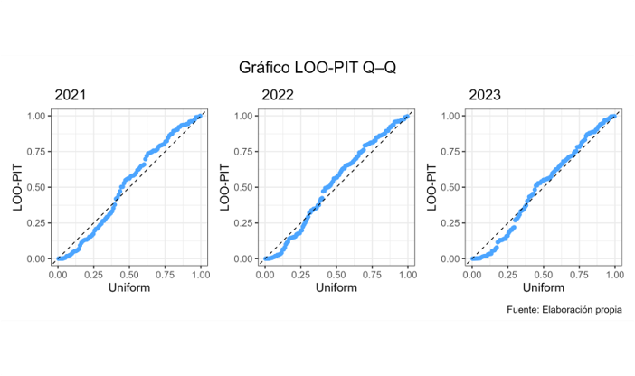

Estimación de la tasa de desocupación comunal mediante Small Area Estimation Bayesiano
Modelo multinomial logit
Resumen ejecutivo
Este informe presenta la metodología y los resultados de la aplicación de Small Area Estimation (SAE) para la estimación de la tasa de desocupación a nivel comunal, utilizando un modelo bayesiano multinomial con enlace logit. El enfoque permite mejorar la precisión de las estimaciones en dominios con tamaños muestrales reducidos, manteniendo coherencia con las definiciones oficiales del mercado laboral.
1 Introducción
1.1 Contexto y motivación
La estimación directa de indicadores laborales a nivel comunal presenta limitaciones importantes debido a la alta variabilidad asociada a tamaños muestrales pequeños. La metodología SAE permite superar estas limitaciones mediante el uso de modelos estadísticos que integran información auxiliar.
1.2 Objetivos
1.2.1 Objetivo general
Estimar la tasa de desocupación comunal mediante un modelo bayesiano de Small Area Estimation.
1.2.2 Objetivos específicos
- Incorporar información auxiliar a nivel comunal.
- Reducir la varianza de las estimaciones respecto de los estimadores directos.
- Garantizar coherencia interna entre categorías laborales.
2 Marco conceptual
2.1 Indicadores del mercado laboral
Se consideran las categorías de ocupados, desocupados e inactivos, de acuerdo con las definiciones oficiales vigentes. Para cada comuna \(d\), se define el vector de proporciones poblacionales:
\[ \boldsymbol{\theta}_d = (\theta_{d1}, \theta_{d2}, \theta_{d3}) \]
donde los subíndices corresponden a ocupados, desocupados e inactivos, respectivamente, y se cumple:
\[ \sum_{k=1}^3 \theta_{dk} = 1. \]
2.2 Small Area Estimation
El enfoque SAE se basa en la especificación de un modelo probabilístico que vincula los parámetros de interés con información auxiliar disponible para todas las áreas, permitiendo estabilizar las estimaciones en dominios pequeños.
3 Fuentes de información
3.1 Encuesta base
La estimación se basa en una encuesta de hogares con diseño muestral complejo. Para cada comuna \(d\) se observa un vector de conteos:
\[ \boldsymbol{y}_d = (y_{d1}, y_{d2}, y_{d3}) \]
con tamaño muestral total \(n_d = \sum_{k=1}^3 y_{dk}\).
3.2 Información auxiliar
Se utilizan variables auxiliares a nivel comunal provenientes de fuentes censales y registros administrativos, recopiladas en el vector \(\boldsymbol{x}_d\).
4 Modelo estadístico
4.1 Modelo de muestreo
Condicional a las proporciones verdaderas \(\boldsymbol{\theta}_d\), se asume que los conteos muestrales siguen una distribución multinomial:
\[ \boldsymbol{y}_d \mid \boldsymbol{\theta}_d \sim \text{Multinomial}(n_d, \boldsymbol{\theta}_d). \tag{1}\]
4.2 Modelo estructural
Se adopta un modelo multinomial logit, tomando como categoría de referencia \(k = 3\) (inactivos). Para \(k = 1,2\):
\[ \log\left( \frac{\theta_{dk}}{\theta_{d3}} \right) = \boldsymbol{x}_d^\top \boldsymbol{\beta}_k + u_{dk}, \quad k = 1,2 \tag{2}\]
donde \(\boldsymbol{\beta}_k\) es un vector de coeficientes fijos y \(u_{dk}\) corresponde a un efecto aleatorio comunal.
4.3 Efectos aleatorios
Los efectos aleatorios se modelan como:
\[ u_{dk} \sim \mathcal{N}(0, \sigma_k^2), \tag{3}\]
asumiendo independencia entre comunas.
5 Inferencia bayesiana
5.1 Priori
Se especifican distribuciones a priori débiles para los parámetros del modelo:
\[ \boldsymbol{\beta}_k \sim \mathcal{N}(0, \tau^2 I), \qquad \sigma_k \sim \text{Half-Cauchy}(0, A). \tag{4}\]
5.2 Estimación
La inferencia se realiza mediante simulación MCMC, obteniendo muestras de la distribución posterior de los parámetros y de las proporciones comunales.
6 Resultados
6.1 Estimaciones comunales
La tasa de desocupación comunal se define como:
\[ TD_d = \theta_{d2}. \tag{5}\]
Se reportan estimaciones puntuales posteriores y intervalos de credibilidad al 95%.
6.2 Comparación con estimación directa
Las estimaciones SAE se comparan con los estimadores directos en términos de precisión y estabilidad.
7 Conclusiones
La aplicación del modelo bayesiano multinomial SAE permite obtener estimaciones comunales más precisas y coherentes de la tasa de desocupación, constituyendo una herramienta robusta para la producción estadística oficial.
8 Resultados Visuales
A continuación, se presenta la distribución de la tasa de desocupación. Como se observa en la Figura 1, las variaciones espaciales son significativas.

Bibliografía
Besag, J., Green, P., Higdon, D., & Mengersen, K. (1995). Bayesian computation and stochastic systems (with discussion). Statistical Science, 10, 3-66.
Datta, G. S., & Lahiri, P. (2000). A unified measure of uncertainty of estimated best linear unbiased predictors in small area estimation problems. Statistica Sinica, 10, 613-627.
Datta, G. S., Lahiri, P., Maiti, T., & Lu, K.-L. (1999). Hierarchical Bayes estimation of unemployment rates for the states of the U.S. Journal of the American Statistical Association, 94, 1074-1082.
Fay, R. E., & Herriot, R. A. (1979). Estimates of income for small places: An application of James–Stein procedures to census data. Journal of the American Statistical Association, 74, 269-277.
Ghosh, M., & Rao, J. N. K. (1994). Small area estimation: An appraisal. Statistical Science, 9, 55-93.
Gilks, W. R., Richardson, S., & Spiegelhalter, D. J. (Eds.). (1996). Markov Chain Monte Carlo in Practice. Chapman & Hall.
Henderson, C. R. (1975). Best linear unbiased estimation and prediction under a selection model. Biometrics, 31, 423-447.
Jiang, J., & Lahiri, P. (2006). Mixed Model Prediction and Small Area Estimation. TEST, 15, 1-96.
Petrucci, A., Pratesi, M., & Salvati, N. (2005). Geographic information in small area estimation: small area models and spatially correlated random area effects. Statistics in Transition, 7, 609-623.
Rao, J. N. K. (2003). Small Area Estimation. John Wiley & Sons.
Rao, J. N. K., & Yu, M. (1994). Small-area estimation by combining time-series and cross-sectional data. The Canadian Journal of Statistics, 22, 511-528.
You, Y. (2008). An integrated modeling approach to unemployment rate estimation for sub-provincial areas of Canada. Survey Methodology, 34, 19-27.
You, Y., & Rao, J. N. K. (2002). Hierarchical small area estimation using unmatched sampling and linking models. The Canadian Journal of Statistics, 30, 3-15.
You, Y., Rao, J. N. K., & Gambino, J. (2003). Model-based Unemployment Rate Estimation for the Canadian Labour Force Survey: A Hierarchical Bayes Approach. Survey Methodology, 29, 25-32.